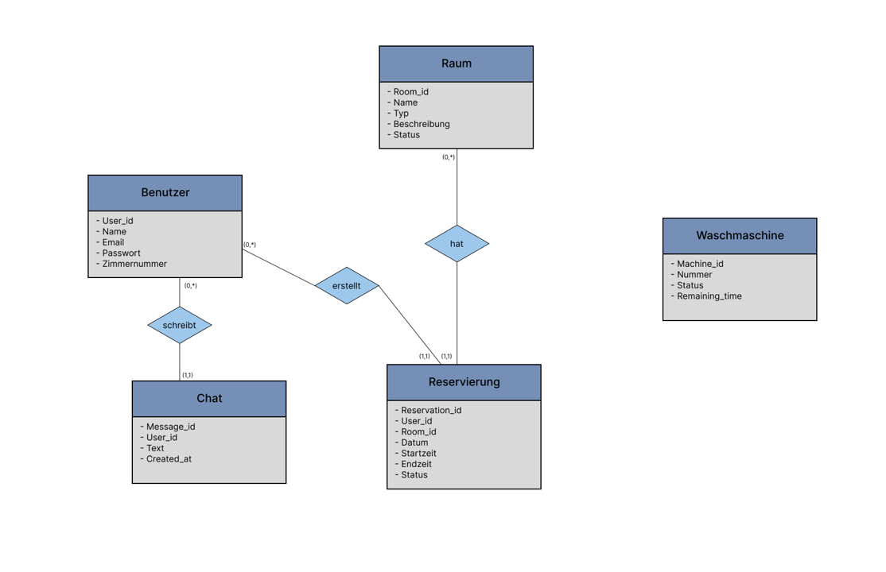

1. Kurze Beschreibung des implementierten Datenmodells
Das Datenmodell des Wohnheim Portals besteht aus mehreren zentralen Entitäten. Die Anwendung verwaltet Benutzer, Räume, Reservierungen, Chat-Nachrichten und Waschmaschinen.
- Benutzer: speichert die Bewohner des Wohnheims.
- Raum: speichert gemeinsame Räume wie Musikraum und Partyraum.
- Reservierung: speichert Buchungen für Räume.
- Chat: speichert Nachrichten aus dem Wohnheim-Chat.
- Waschmaschine: speichert den Status der Waschmaschinen.
Die Waschmaschinen haben keine direkte Beziehung zu den Benutzern, da die Benutzer nur den Status der Waschmaschinen sehen können.
2. ER-Diagramm
Das folgende ER-Diagramm zeigt die wichtigsten Entitäten und Beziehungen der Anwendung.

3. Verlinkung zu den implementierten Routen mit Datenbankanbindung
Diese Routen laden ihre Daten über Controller und Model-Module aus der Datenbank.
4. Wichtige SQL-Abfragen und Datenbank-Funktionen
Die Datenbank wird in der Datei src/models/db.js geöffnet. Dort werden außerdem die SQL-Dateien data/create.sql und data/populate.sql ausgeführt.
Waschmaschinen laden
Die Waschmaschinen werden aus der Tabelle waschmaschine gelesen.
SELECT *
FROM waschmaschine;Räume laden
Musikraum und Partyraum werden beide in der Tabelle raum gespeichert. Über die Spalte typ wird unterschieden, ob es sich um den Musikraum oder den Partyraum handelt.
SELECT *
FROM raum
WHERE typ = ?;Reservierungen laden
Reservierungen werden über die Tabelle reservierung geladen. Die Fremdschlüssel user_id und room_id verbinden Reservierungen mit Benutzer und Raum.
SELECT *
FROM reservierung
WHERE room_id = ?;Chat-Nachrichten laden
Für den Chat werden Nachrichten gemeinsam mit dem Namen des Benutzers geladen.
SELECT
chat.message_id,
chat.text,
chat.created_at,
benutzer.name AS author
FROM chat
JOIN benutzer ON chat.user_id = benutzer.user_id
ORDER BY chat.created_at ASC;5. Beschreibung der Testdaten
Die Testdaten befinden sich in der Datei data/populate.sql. Dort werden Beispielbenutzer, Räume, Waschmaschinen, Reservierungen und Chat-Nachrichten eingefügt.
- Mehrere Benutzer, zum Beispiel Anne, Max, Sara und Jakub.
- Zwei Räume: Musikraum und Partyraum.
- Mehrere Waschmaschinen mit Status frei oder belegt.
- Reservierungen für Musikraum und Partyraum.
- Beispielnachrichten für den Wohnheim-Chat.
Die Testdaten werden beim Start der Anwendung über db.js initialisiert. Dadurch stehen die Daten direkt beim Testen der Routen zur Verfügung.